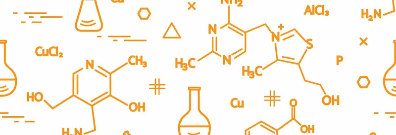
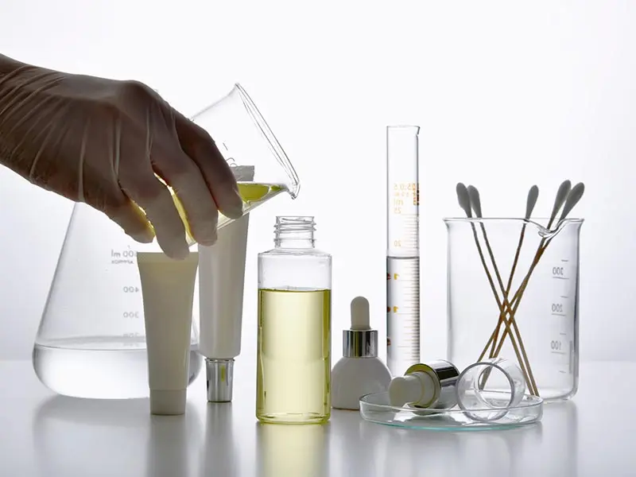
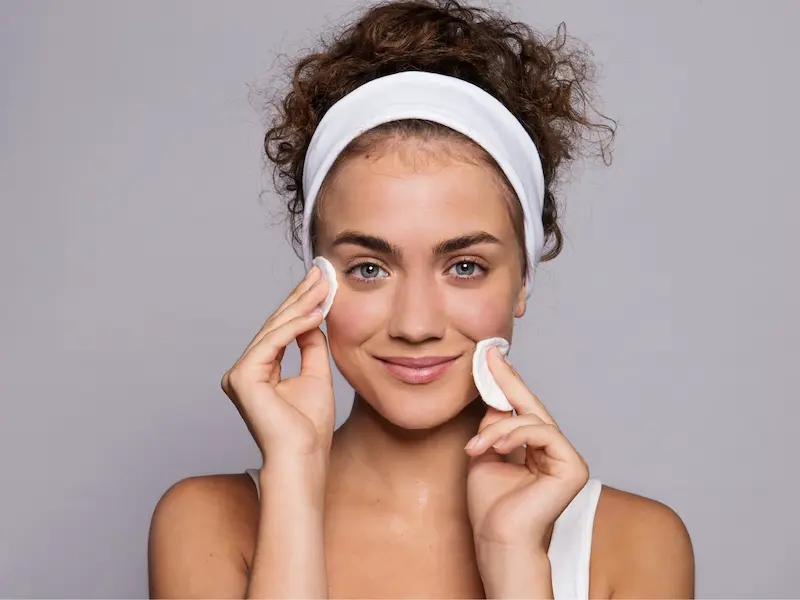
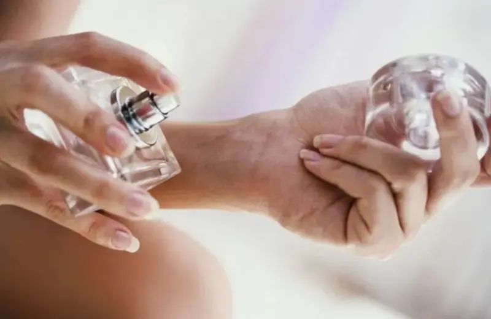
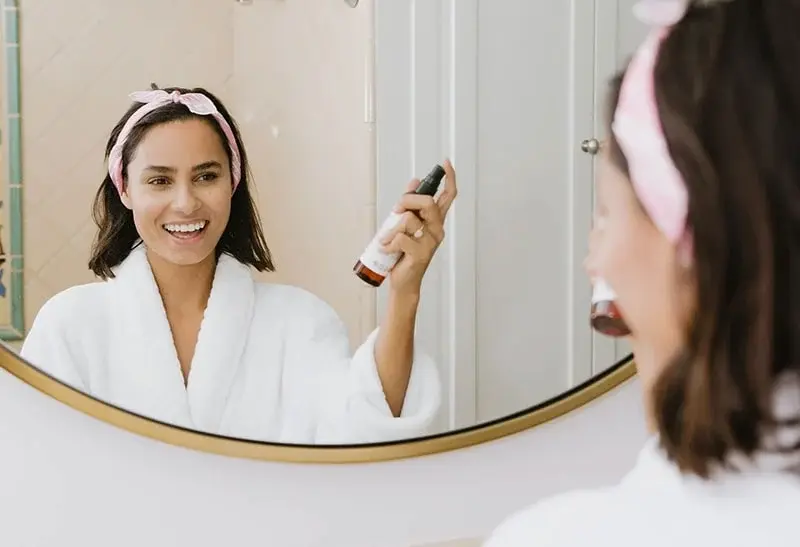
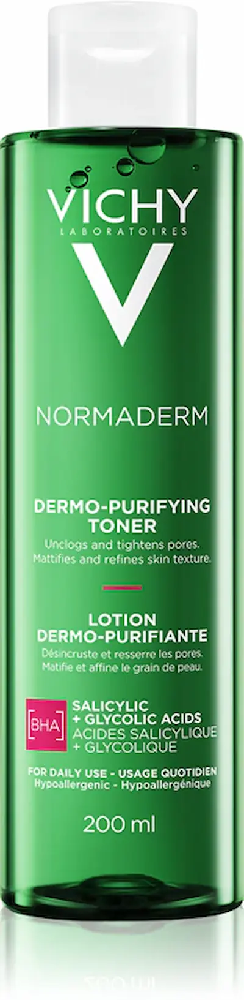
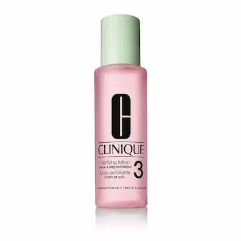
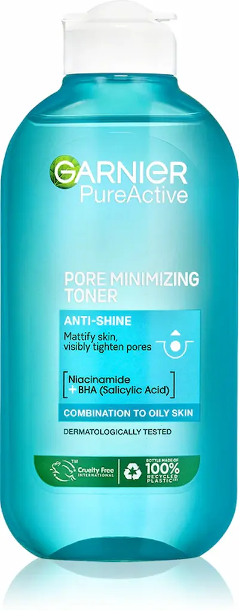
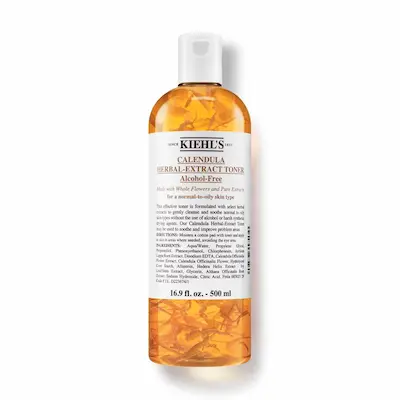

Factorul cheie — tipul de alcool și concentrația sa în formulăTipuri de alcool în cosmetice: care sunt dăunătoare și care sunt benefice?
Nu toate alcoolurile din cosmetice sunt dăunătoare — acesta este unul dintre cele mai răspândite mituri. Sub cuvântul „alcohol” se ascunde un întreg grup de substanțe cu proprietăți diferite. Efectul asupra pielii depinde de structura chimică, concentrație și formula produsului în ansamblu.
Este important să înțelegem: un tip de alcool poate usca pielea și afecta bariera de protecție, în timp ce altul poate înmuia, reține umiditatea și îmbunătăți textura cremei.
❌ Alcooluri cu evaporare rapidă (simple)
În această categorie intră Alcohol Denat., Ethanol, Isopropyl Alcohol. Sunt utilizate pe scară largă în cosmetice datorită capacității de a evapora rapid, degresând pielea și sporind absorbția ingredientelor active.
De ce sunt adăugate:
- reduce luciul gras și oferă un efect mat imediat
- au efect antiseptic
- îmbunătățesc textura (produsul se absoarbe rapid și nu se simte greu)
Dar există și dezavantaje:
- pot deteriora bariera lipidică a pielii
- provoacă uscăciune și senzație de strângere
- la utilizare frecventă pot crește producția de sebum
- măresc sensibilitatea pielii și riscul de iritații
Trebuie folosite cu precauție la pielea uscată, sensibilă sau deshidratată, precum și în condiții de aer uscat și sezon de încălzire în Moldova.
⚖️ Când aceste alcooluri pot fi benefice
În ciuda posibilelor dezavantaje, alcoolurile cu evaporare rapidă nu sunt întotdeauna dăunătoare. În concentrații mici și formule echilibrate, ele pot fi utile:
- pentru pielea grasă și problematică cu luciu pronunțat
- în produse pentru matifiere temporară (de exemplu, înainte de machiaj)
- în produse antiseptice și de curățare
Aspectul cheie este dozajul și poziția în formulă. Dacă alcoolul apare la începutul listei de ingrediente, concentrația este mare și riscul de uscare crescut.
✅ Alcooluri grase (emoliente)
În această categorie intră Cetearyl Alcohol, Cetyl Alcohol, Behenyl Alcohol. În ciuda cuvântului „alcohol”, ele acționează diferit și nu au efect agresiv asupra pielii.
Funcțiile lor:
- înmoaie și netezesc pielea
- ajută la reținerea umidității
- întăresc bariera de protecție
- îmbunătățesc textura cremelor și emulsiilor
Aceste alcooluri se întâlnesc frecvent în creme hidratante, produse pentru pielea uscată și sensibilă și aproape niciodată nu provoacă iritații.
📌 Cum să citești corect lista de ingrediente
Pentru a înțelege dacă un produs este sigur, trebuie să iei în considerare câțiva factori:
- tipul de alcool (simple vs grase)
- poziția sa în listă (cu cât e mai sus, cu atât concentrația e mai mare)
- formula generală (există ingrediente hidratante și reparatoare)
În formulele dermatocosmetice moderne, alcoolurile sunt adesea folosite în combinații echilibrate, așa că e important să evaluezi produsul în ansamblu, nu doar prezența cuvântului „alcohol” în listă.
Cum afectează alcoolul diferitele tipuri de piele
Efectul alcoolului în cosmetice depinde direct de tipul pielii. Același ingredient poate fi benefic pentru pielea grasă și inconfortabil pentru pielea uscată sau sensibilă. De aceea, îngrijirea trebuie aleasă individual.
Piele grasă și mixtă
Pentru pielea cu producție crescută de sebum, alcoolurile pot oferi un efect vizual rapid: reduc luciul, oferă senzația de curățenie și matifiere.
- reduce temporar luciul gras
- degresează suprafața pielii
- creează senzația de „piele curată” imediat după aplicare
Totuși, utilizarea frecventă a alcoolurilor agresive poate usca pielea, determinând glandele sebacee să lucreze mai activ. Astfel, luciul revine mai repede și devine mai pronunțat.
Piele uscată și deshidratată
Pentru acest tip de piele, alcoolurile sunt de obicei nedorite, mai ales în concentrație mare. Ele cresc pierderea de umiditate și pot afecta bariera de protecție.
- sporește uscăciunea și senzația de strângere
- poate provoca descuamare
- crește sensibilitatea pielii
În sezonul rece și în aer uscat din Moldova, acest lucru este deosebit de important — pielea devine mai vulnerabilă și necesită îngrijire delicată fără ingrediente agresive.
Piele sensibilă
Pielea sensibilă reacționează cel mai puternic la alcool. Chiar și concentrații mici pot provoca disconfort.
- roșeață și senzație de arsură
- iritație și senzație de căldură
- slăbirea barierei de protecție
Pentru acest tip de piele, este mai bine să alegi produse fără alcool agresiv sau cu conținut minim și să acorzi atenție ingredientelor calmante și reparatoare.
Piele normală
Pielea normală tolerază, de obicei, cantități moderate de alcool, mai ales dacă formula este echilibrată.
- nu provoacă disconfort pronunțat
- poate fi utilizată în texturi ușoare (de ex. tonice)
- este important să menții echilibrul cu produsele hidratante
Regula principală — urmărește reacția pielii și nu abuza de produse cu conținut ridicat de alcool.


Când cosmeticele cu alcool sunt cu adevărat necesare
În ciuda reputației controversate, cosmeticele cu alcool pot fi benefice dacă sunt utilizate corect și în funcție de tipul pielii. În anumite cazuri, aceste produse ajută la obținerea mai rapidă a rezultatelor și îmbunătățirea aspectului pielii.
Piele grasă și problematică
La producția excesivă de sebum, alcoolurile pot fi ingrediente eficiente, mai ales în produse de curățare și matifiere.
- ajută la reducerea rapidă a luciului gras
- curăță porii și reduc senzația de piele murdară
- au ușor efect antiseptic
Totuși, este important să nu folosești aceste produse prea frecvent pentru a nu provoca efectul invers — creșterea producției de sebum.
Inflamații și acnee
În produsele pentru pielea problematică, alcoolul poate avea rol auxiliar — reduce activitatea bacteriilor și usucă inflamațiile.
- reduce roșeața elementelor izolate
- accelerază uscarea inflamațiilor
- crește absorbția ingredientelor active (ex. acizi)
Este important ca formula să conțină și ingrediente calmante, altfel pielea poate deveni mai iritată și sensibilă.
Climat cald și umiditate crescută
În condiții de căldură și umiditate ridicată, caracteristice verii în Moldova, produsele ușoare cu alcool pot oferi senzația de prospețime și confort.
- evaporare rapidă și nu încarcă pielea
- reduce senzația de lipiciozitate
- pot fi folosite ca bază pentru machiaj sau în îngrijirea de zi
Aceste produse sunt recomandate în special pentru persoanele cu piele grasă sau mixtă, care nu tolerează texturi dense.
Efect pe termen scurt (îngrijire SOS)
Produsele cu alcool pot fi folosite ca metodă rapidă de îmbunătățire a aspectului pielii înainte de evenimente importante.
- matifiere rapidă
- reduc vizibilitatea porilor
- creează textură uniformă pentru machiaj
Totuși, acest efect este temporar, de aceea aceste produse trebuie utilizate episodic, nu ca bază zilnică.
Este important să reții: cosmeticele cu alcool pot fi benefice dacă sunt folosite conștient, în cantități moderate și împreună cu produse hidratante și reparatoare.


Top produse cu alcool „corect”




Ce tipuri de alcool să cauți în listă (INCI)
Nu toate alcoolurile din cosmetice sunt dăunătoare. Este important să faci diferența între tipuri: unele pot usca pielea, altele o pot înmuia și proteja. Pentru a alege corect, uită-te la denumirile din listă (INCI).
❌ Alcooluri agresive (folosește cu prudență)
Aceste alcooluri oferă de obicei efect matifiant rapid, dar la utilizare frecventă pot afecta bariera de protecție a pielii.
- Alcohol Denat. — alcool denaturat
- Ethanol — alcool etilic
- Isopropyl Alcohol — alcool izopropilic
Pot fi utile pentru pielea grasă în cantități mici, dar la pielea sensibilă sau uscată e mai bine să eviți concentrațiile mari.
⚖️ Alcooluri condiționat acceptabile
Aceste ingrediente pot apărea în formule și nu sunt întotdeauna dăunătoare, mai ales dacă se află în mijlocul sau la sfârșitul listei.
- Benzyl Alcohol — conservant, poate irita
- SD Alcohol — tip de alcool denaturat
Este important să iei în considerare formula generală: prezența ingredientelor hidratante și calmante reduce riscul de iritații.
✅ Alcooluri „bune” (alcooluri grase)
Aceste alcooluri nu au legătură cu cele agresive. Ele acționează ca ingrediente emoliente și protectoare.
- Cetearyl Alcohol
- Cetyl Alcohol
- Behenyl Alcohol
- Stearyl Alcohol
Ajută la reținerea umidității, îmbunătățesc textura cremei și fac pielea mai moale. Sunt sigure chiar și pentru pielea uscată și sensibilă.
Cum să interpretezi concentrația?
Ingredientele sunt listate descrescător după concentrație. Dacă alcoolul este la începutul listei — e mult și produsul poate fi agresiv. Dacă e aproape de final — concentrația este mică și riscul de iritație minim.
În climatul din Moldova (căldură vara și aer uscat iarna) este important să alegi formule echilibrate: chiar și pielea grasă are nevoie de hidratare pe lângă controlul sebumului.
Întrebări frecvente despre alcool în cosmetice
Alcoolul din cosmetice dăunează pielii?
Nu întotdeauna. Daunele depind de tipul de alcool și de concentrația acestuia. Alcoolii simpli (de ex. Alcohol Denat.) pot usca pielea dacă sunt folosiți frecvent, în timp ce alcoolii grași (Cetearyl Alcohol, Cetyl Alcohol) catifelează și protejează pielea.
Când cosmeticele cu alcool sunt cu adevărat utile?
Produsele cu alcool pot fi utile pentru pielea grasă și problematică, în special în tonice și produse anti-acneice. Alcoolul ajută la reducerea sebumului, curăță porii și îmbunătățește absorbția ingredientelor active.
Se poate folosi alcoolul pe pielea sensibilă?
Este mai bine să eviți produsele cu concentrații mari de alcool agresiv. Totuși, formulele cu alcool graș sau cu concentrație mică de alcool, combinate cu ingrediente hidratante, pot fi sigure.
Cum știu dacă există mult alcool în produs?
Ingredientele sunt listate descrescător după concentrație. Dacă alcoolul apare la începutul listei — este mult; dacă este aproape de final — concentrația este scăzută și riscul de iritație este minim.
Ce tipuri de alcool sunt sigure pentru piele?
Alcoolii grași sunt siguri: Cetearyl Alcohol, Cetyl Alcohol, Behenyl Alcohol și Stearyl Alcohol. Aceștia acționează ca emolienți și agenți hidratanți și sunt potriviți chiar și pentru pielea uscată.
Care sunt riscurile folosirii frecvente a alcoolului?
Folosirea regulată a alcoolilor agresivi poate afecta bariera de protecție a pielii, provocând uscăciune, iritații și chiar creșterea producției de sebum ca răspuns la uscarea excesivă.
Cum pot reduce efectele negative ale alcoolului în îngrijire?
Alege produse cu ingrediente hidratante (glicerină, acid hialuronic, pantenol), nu combina mai multe produse cu alcool simultan și aplică întotdeauna cremă hidratantă în rutină.
Trebuie să evit alcoolul în climatul Moldovei?
Vara, alcoolul poate fi util pentru controlul sebumului, dar iarna și în sezonul de încălzire este mai bine să reduci utilizarea, deoarece pielea tinde deja să fie uscată și deshidratată.